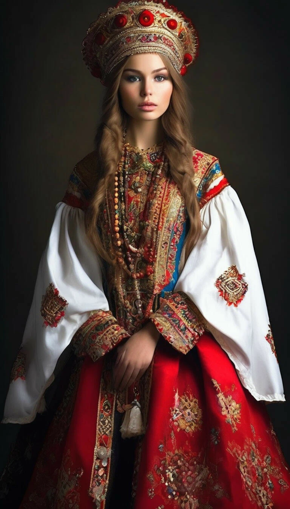
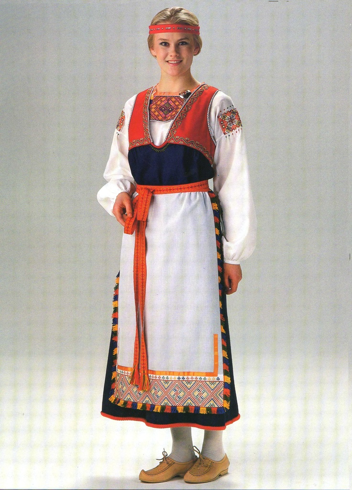
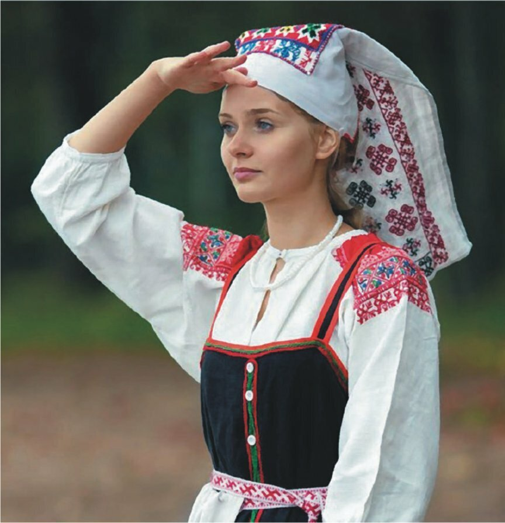
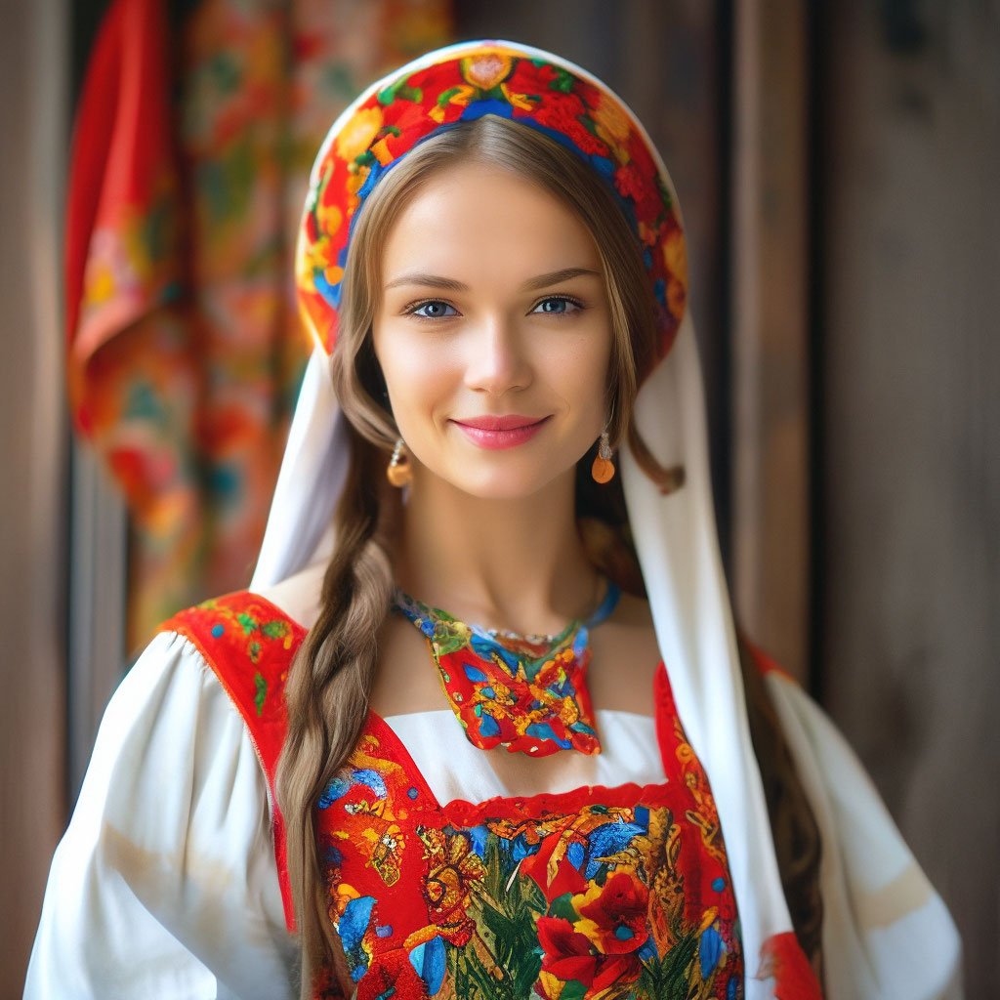

Ленинградская область — регион с богатым этническим и историческим наследием, в котором проживали и продолжают жить разные народы.
Историческое развитие региона
Древние времена
На территории современной Ленинградской области с древних времен жили финно-угорские народы, такие как ижорцы, карелы, луговики и вепсы. Эти народы занимались охотой, рыболовством и земледелием, создавали уникальные культурные традиции и ремесла.
Средние века
В Средние века территория входила в состав Новгородской земли, которая была важным торговым и культурным центром Северо-Запада России. В это время развивались торговые пути, укреплялись города и крепости.
Новое время
В XVII–XVIII веках регион стал частью Российской империи, началось развитие промышленных предприятий, строительство портов и городов. В этот период усилилась русская культурная и этническая доминанта, однако финно-угорские народы сохраняли свои традиции и язык.
XX век
В советское время Ленинградская область стала важным промышленным и научным центром. В годы Великой Отечественной войны регион и его население понесли тяжелые потери, но также внесли значительный вклад в победу. После войны регион активно развивался, строились новые города, промышленные предприятия и инфраструктура.
Этническая карта Ленинградской области
(Русские, Карелы, Вепсы, Ижорцы и другие народы)
Регион отличается разнообразным этническим составом, где каждый народ сохраняет свои уникальные традиции и культуру.
Народы Ленинградской области

Русские
Населенность: примерно 1,8-2 миллиона человек
Более 95% населения области
Местоположение: По всей территории Ленинградской области
Традиционные ремесла:
- Ремесло ремесленников (ткачество, плетение, кузнечное дело) — передающиеся из поколения в поколение
- Художественная обработка дерева и металла — изготовление резных изделий, посуды, украшений
- Создание традиционной одежды и вышивки — использование национальных орнаментов
- Пчеловодство — производство мёда, воска, прополиса
- Плотницкое и столярное дело — изготовление мебели, лодок, деревянных домов

Карелы
Населенность: около 3-4 тысяч человек
Местоположение: В северных и северо-западных районах области, в Карелии
Традиционные ремесла:
- Ремесло по обработке дерева — резьба по дереву, изготовление посуды, мебельных изделий
- Изготовление традиционных народных костюмов и вышивки — узорчатые одежды, украшения из бисера
- Ковроткачество и ткачество шерсти — создание ковров, покрывал, одежды и аксессуаров
- Ремесло по изготовлению украшений из серебра и металлов — серьги, браслеты, амулеты
- Рыболовство и охота — важная часть традиционного хозяйства

Вепсы
Населенность: примерно 1-2 тысячи человек
Местоположение: В южных частях Карелии и Ленинградской области
Традиционные ремесла:
- Ремесло по обработке дерева — изготовление посуды, игрушек, предметов быта
- Изготовление народных костюмов и вышивки — использование натуральных тканей, украшений
- Ковроткачество — создание ковров и ковровых изделий с традиционными узорами
- Ремесло по изготовлению украшений из металла и камня — амулеты, украшения
- Рыболовство — важная часть хозяйства, использование ремесленных орудий

Ижорцы
Населенность: около 1-2 тысяч человек
Местоположение: В лесных районах, в основном в южной части области
Традиционные ремесла:
- Ремесло по обработке дерева — резьба, изготовление мебели, утвари
- Изготовление народных костюмов и вышивки — яркие узоры, бисерные украшения
- Плетение из лозы и соломы — корзины, мебель, украшения
- Ремесло по изготовлению украшений из металлов и стекла — бусы, подвески
- Рыболовство и охота — использование ремесленных орудий
Современность
Сегодня Ленинградская область — это многокультурный регион, где живут представители русской, карельской, финно-угорских и других народов. Регион славится своей природой, историческими памятниками, культурным наследием и развитой промышленностью.
Сохраняя традиции предков, народы Ленинградской области продолжают развивать уникальные ремесла, которые являются важной частью культурного наследия всего Северо-Западного региона России.